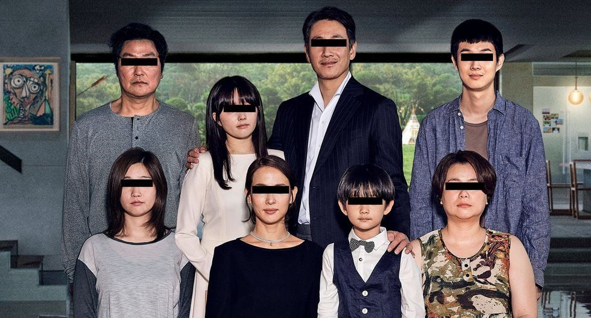

About
Ki-woo Kim (Choi Woo-Shik) is a young man living in poverty in the slums of a nameless South Korean city with his family - father Ki-taek Kim (Song Kang-ho), mother Chung-sook Kim (Jang Hye-jin), and sister Ki-jung (Park So-dam). The family lives in a garden unit where they struggle finding a Wi-Fi signal to sneak into in order to get access to the Internet to watch TV, get fumigated on, and have to watch men urinating in the alley outside their home. They make ends meet by doing menial tasks such as folding pizza boxes - and even then, get criticized by the pizza employees for messing up the boxes. Ki-woo's wealthy friend Min-hyuk pays the family a visit, giving them a gift - a rock that is supposed to bring those who have it wealth and prosperity. He then tells Ki-woo that he has been tutoring the teenage daughter of a very wealthy family. He is leaving to study abroad but is in love with the daughter, and knows that any of the other university boys would steal her away. He wants Ki-woo to be her tutor, knowing he will watch over her so that Min-hyuk can propose to her once she graduates high school. Ki-woo knows he isn't qualified since he isn't in college, but Min-hyuk promises to vouch for him, and so he agrees and has Ki-jung forge credentials for him to take to his interview.
Ki-woo interviews at the very wealthy Park family where he meets Mr. Park (Lee Sun-kyun), his scatterbrained wife Mrs. Park (Choi Yeo-jeong), and their children, teenage daughter Da-hye and young son Da-song. Ki-woo realizes he needs to flirt with Da-hye to get the job, and he does - Mrs. Park pays him an exorbitant amount of money and mentions they need an art tutor for Da-song. Da-song had a traumatic incident where he saw a "ghost" in the house and had a seizure and has been needing help with his art. Ki-woo introduces them to Ki-jung, who forges documents for herself and goes by "Jessica," and she too begins making money hand over fist. When the Park's limo driver takes her home, Ki-jung leaves her underwear in the car in order to get him fired: she then suggests her "Uncle" as the new driver - who is really Ki-taek. The last position is that of the housekeeper, Moon-kwang (Lee Jeung-eun). She has worked for the home since before the Park family lived there - she worked for the previous owner, an eccentric architect. In order to get her fired, the Kims exploit her allergy to peaches, causing her to have allergic reactions: they then convince Mrs. Park that she is seriously contagiously ill and cannot be around their son. She leaves, devastated, and Mrs. Kim is given the job, fooling the Park family into hiring the entire Kim family. The question then becomes how far the Kims can take this scam in their quest to become their version of the Parks.
Themes and Interpretations
The main themes of Parasite are class conflict, social inequality and wealth disparity. Film critics and Bong Joon-ho himself have considered the film as a reflection of late-stage capitalism, and some have associated it with the term "Hell Joseon" (헬조선), a satirical phrase which posits that living in hell would be akin to living in modern South Korea. This term came about due to high rates of youth unemployment, the intense demands of pursuing higher education, the crisis of home affordability, and the increasing socio-economic gap between the wealthy and poor. In Coronavirus Capitalism Goes to the Cinema, Nulman writes that the etymology of the word 'parasite' originally refers to "person who eats at the table of another", which is presented in one of the scenes of the film.
Critics have also considered the themes of colonialism and imperialism. According to Ju-Hyun Park, the film plays out within "the capitalist economic order inaugurated and upheld in Korea by colonial occupation", and the use of English language in the film denotes prestige within that economic system. The Park family's son, Da-song, is obsessed with "Indians" and owns Native American-themed toys and inauthentic replicas.Eugene Nulman makes the link between the 'native' Park family and the invaders - the Kims who bring with them deadly parasites for which the natives have no immunity. Nulman points to the miasma theory of scent carrying disease where it was thought that the natives could catch disease just by smelling the noxious air carried by colonising Spaniards. This connects to the film's theme around the class distinction of smell. Bong has noted that: "I wouldn't go so far as to say it's a commentary on what happened in the United States, but it's related in the sense that this family starts infiltrating the house and they already find a family living there. So you could say it's a joke in that context.
Legacy and Accolades
 Parasite premiered at the 2019 Cannes Film Festival on 21 May 2019, where it became the first Korean film to win its top prize, the Palme d'Or. It was released in South Korea by CJ Entertainment on 30 May, and was praised for Bong's direction and screenplay, and also for its editing and production design. It grossed over $263 million worldwide on a $15.5 million budget.
Parasite premiered at the 2019 Cannes Film Festival on 21 May 2019, where it became the first Korean film to win its top prize, the Palme d'Or. It was released in South Korea by CJ Entertainment on 30 May, and was praised for Bong's direction and screenplay, and also for its editing and production design. It grossed over $263 million worldwide on a $15.5 million budget.
Among its numerous accolades, Parasite won the leading four Academy Awards at the 92nd Academy Awards: Best Picture, Best Director, Best Original Screenplay, and Best International Feature Film, becoming the first non English-language film to win the Academy Award for Best Picture.[note 1] It is the first South Korean film to receive any Academy Award recognition, and one of only three films overall to win both the Palme d'Or and the Academy Award for Best Picture, the first such achievement in over 60 years. It won the Golden Globe Award for Best Foreign Language Film and the BAFTA Award for Best Film Not in the English Language, and became the first non English-language film to win the Screen Actors Guild Award for Outstanding Performance by a Cast in a Motion Picture. It has since been cited as among the best films of the 2010s, the 21st century, and of all time. A television series based on it is in early development.